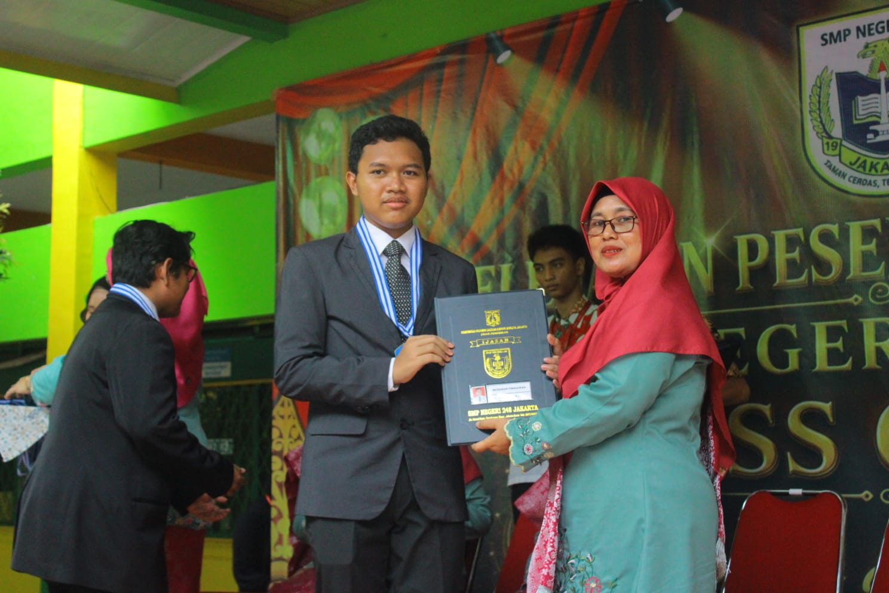
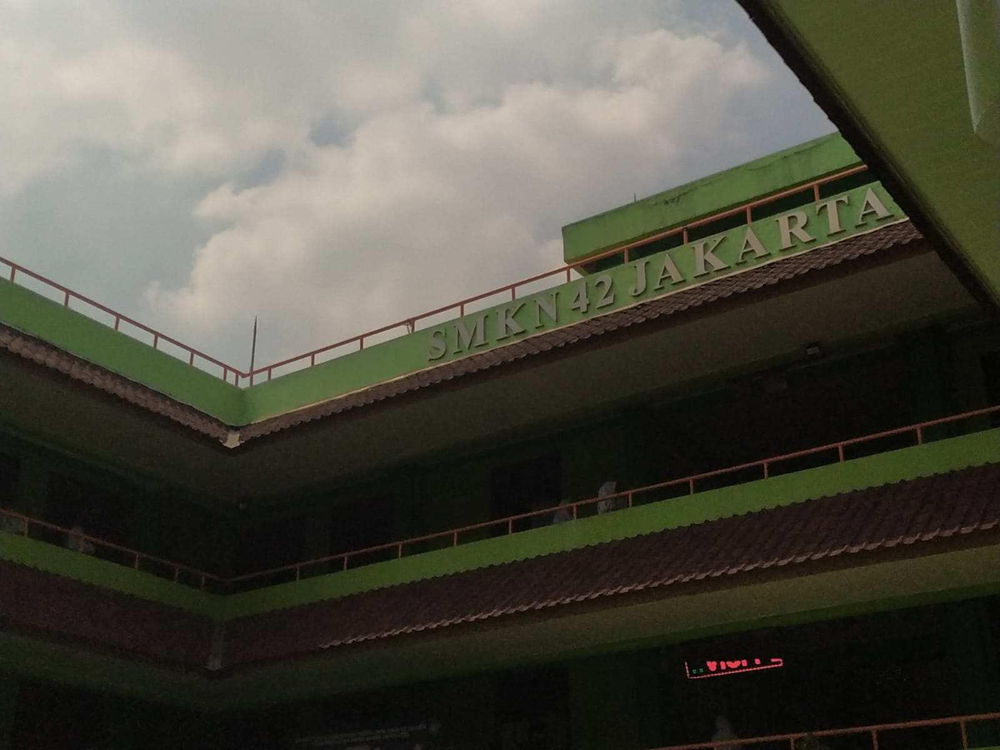
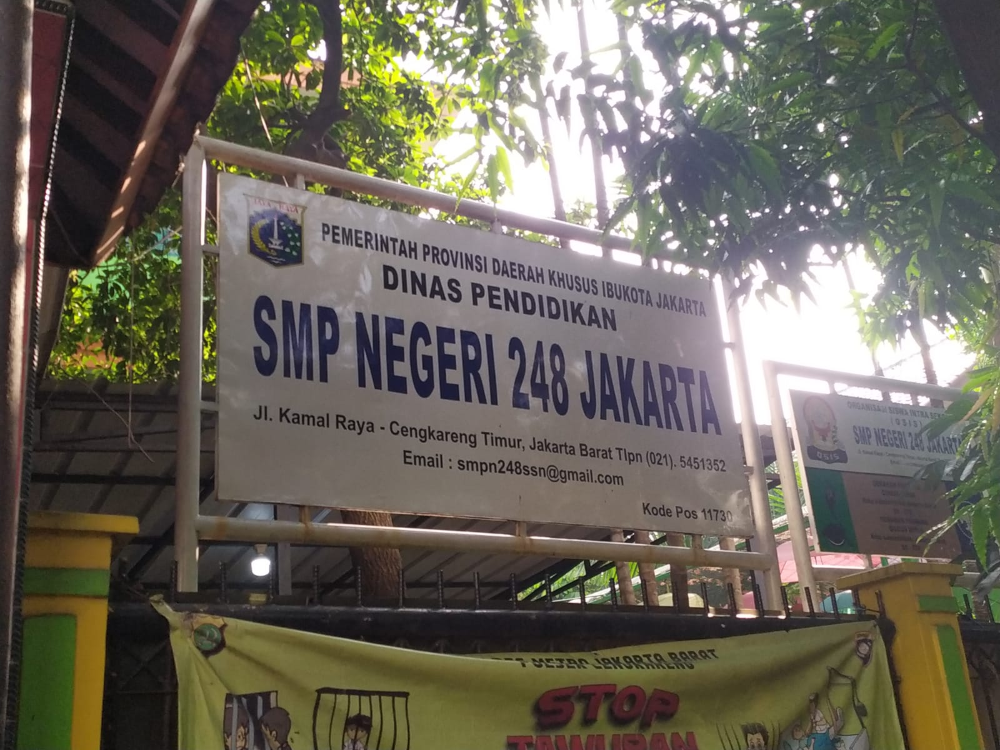
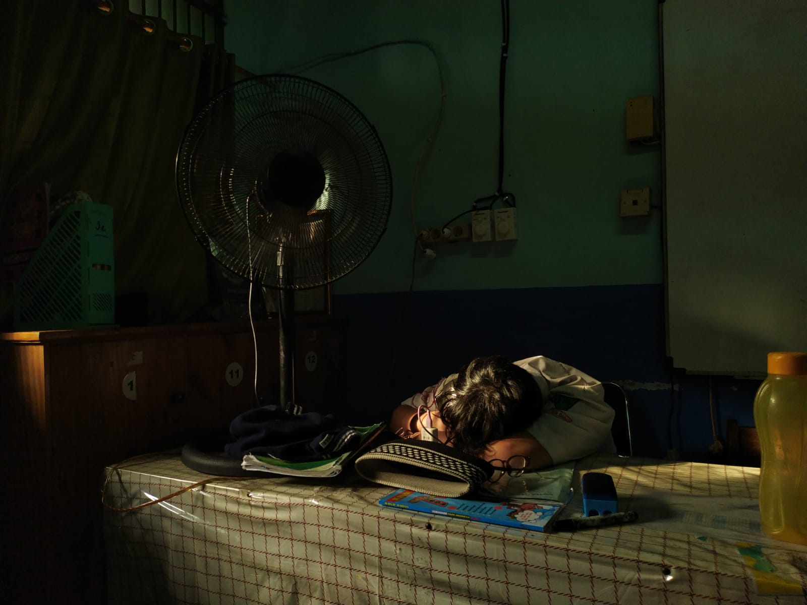
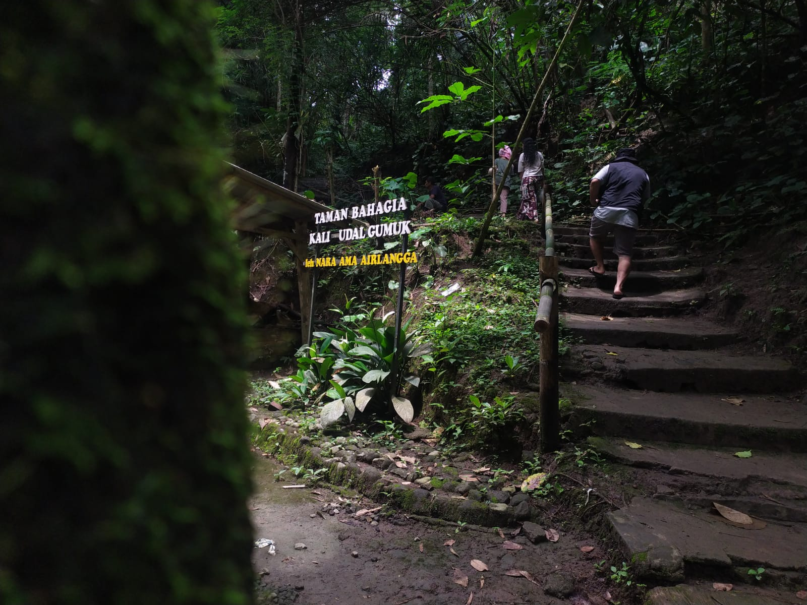
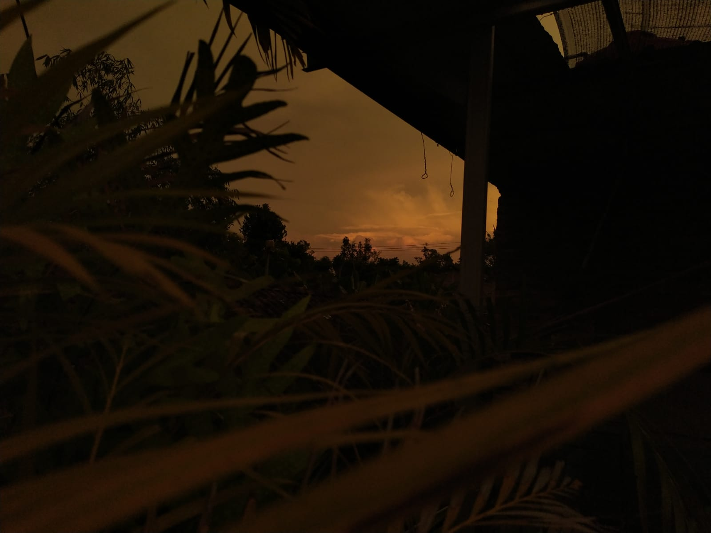
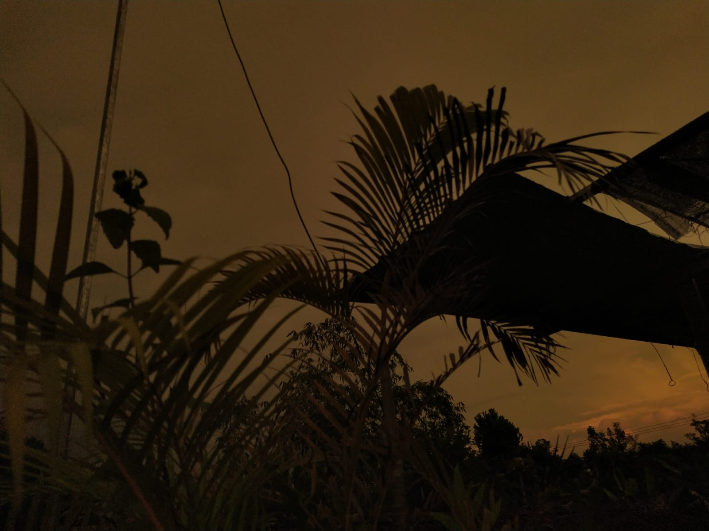
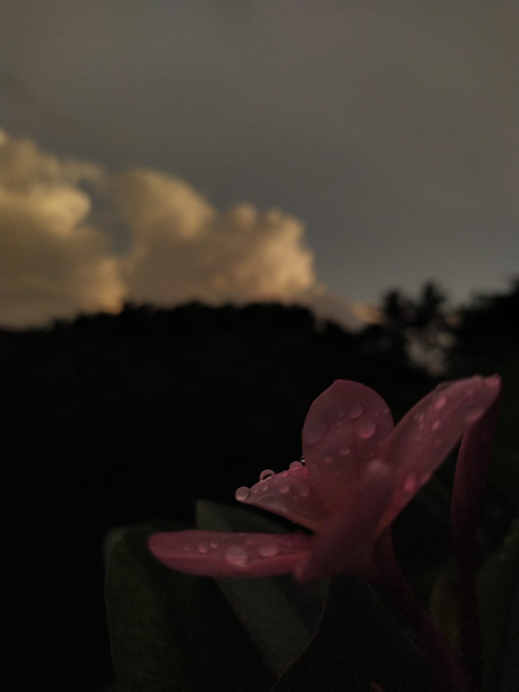
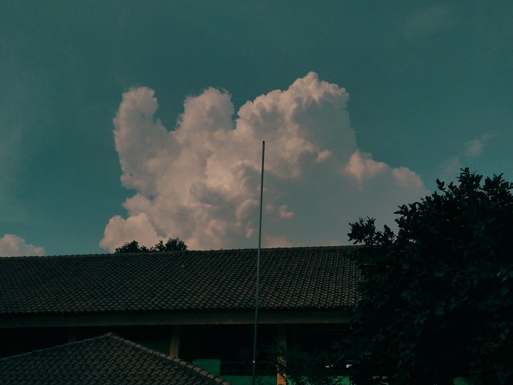

Panggil saya Iwan
"Belajar, berkarya, dan melihat dunia dari sudut pandang yang berbeda."
Saya adalah siswa SMK jurusan MPLB yang tertarik pada teknologi, fotografi, game, dan anime. Saat ini saya sedang mempelajari fotografi, bahasa Jepang, dan bahasa isyarat.
"Fotografi bagi saya adalah cara untuk belajar melihat hal-hal sederhana dari sudut pandang yang berbeda."
Fotografi masih merupakan hobi yang sedang saya kembangkan, bukan pekerjaan profesional.
Jurusan Manajemen Perkantoran dan Layanan Bisnis (MPLB)
Kelas X-MP 2
Siswa AktifPeringkat 7 hasil Tes Kemampuan Akademik (TKA) tingkat angkatan.
Beberapa foto yang saya ambil sebagai bagian dari proses belajar dan mengembangkan minat saya dalam fotografi.

Gedung sekolah dari sudut pandang bawah

Suasana keseharian di lingkungan sekolah

Momen spontan yang tertangkap kamera

Keheningan alam yang menenangkan

Langit jingga di penghujung hari

Bentuk siluet yang dramatis

Detail kecil yang sering terlewat

Bentang langit yang luas
Kumpulan foto-foto yang saya ambil. Klik foto untuk memperbesar.
"Video akan ditambahkan pada pembaruan berikutnya."
Untuk menghubungi saya, silakan melalui Instagram.
Hubungi melalui Instagram"Testimoni dari teman, keluarga, atau orang yang melihat karya saya akan ditambahkan seiring berkembangnya portfolio saya."